Your notes, tasks and days, in one calm place.
Notes, tasks, projects and habits, kept around the one page that matters most: today. For Mac and iPhone. Free to use.
Small actions. Compound change.

A space to think
Every day has its own page, and Coral opens on it. Write, capture what occurs to you, tick what’s done. The day keeps a log of what actually happened, and the week, the month, the quarter and the year each have a page of their own beside it.
Notes hold the work itself: headings, lists, checklists, tables, code, callouts, pictures and links. Any line can become a task without leaving the page, and folders, properties and full-text search keep it all findable.
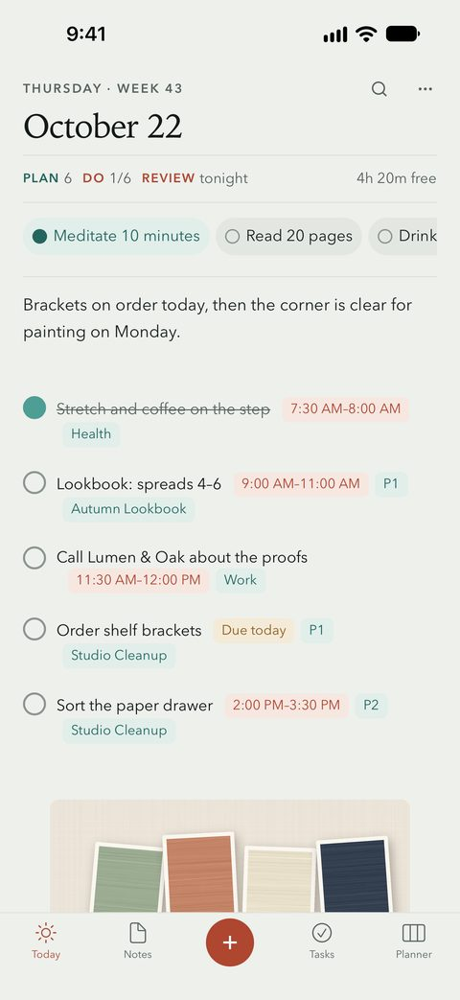
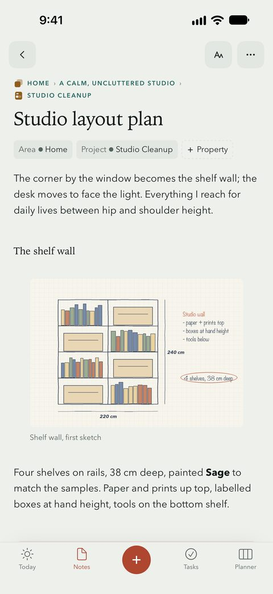
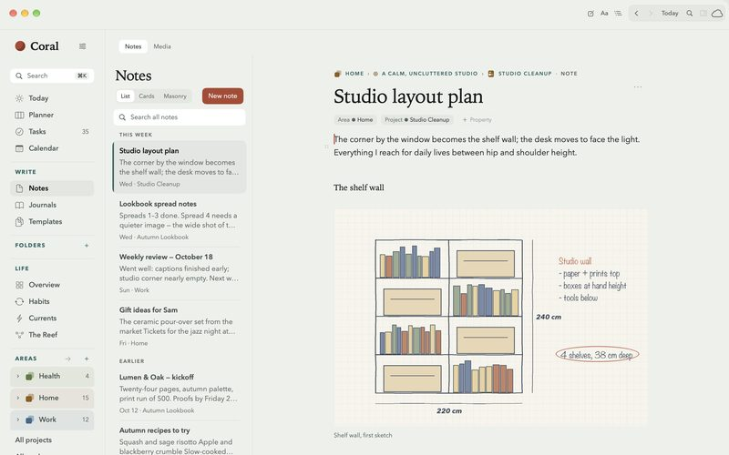
The depth under the calm
Quiet on the surface, a great deal underneath: tasks with dates, deadlines and repeat rules, projects in phases, a planner for the hours, habits counted in amounts, saved views over everything, a board you arrange, and a map of how it all fits.
Of tasks
Dates, deadlines, repeat rules, priorities and tags are simple properties on each task. Deleted something by mistake? Undo it, or find it in Recently Deleted.
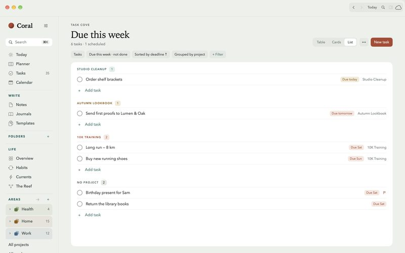
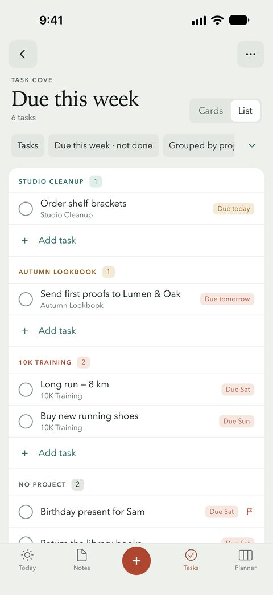
Of projects
Group tasks into projects, with phases and a timeline, and projects into the areas of your life.
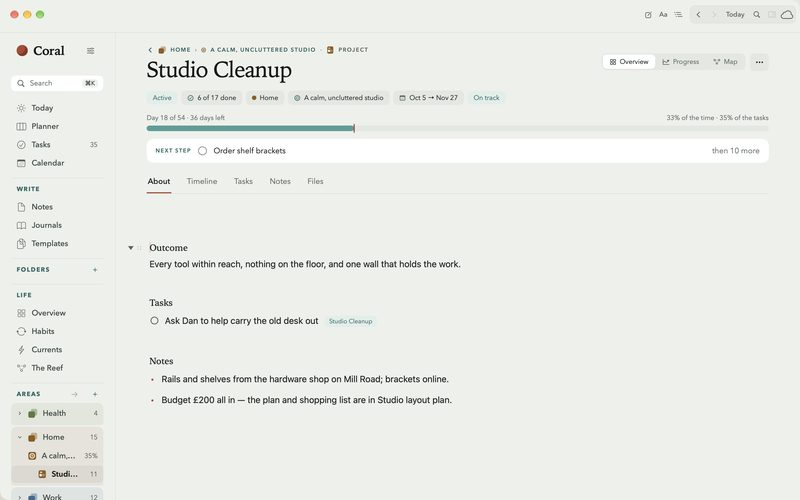
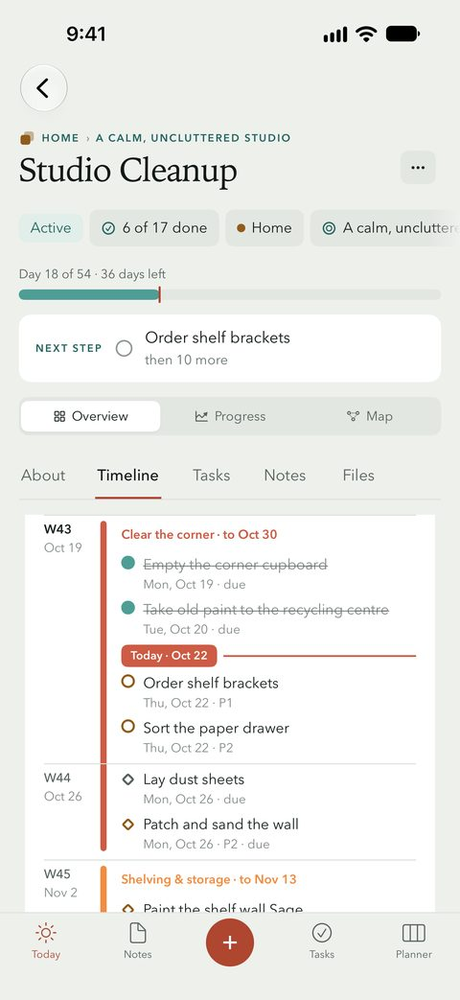
Of the hours
Your calendar sits beside your tasks, and Reminders come in too. With Coral Pro, the Planner lays the day out: drag a task onto the hour it will get done.
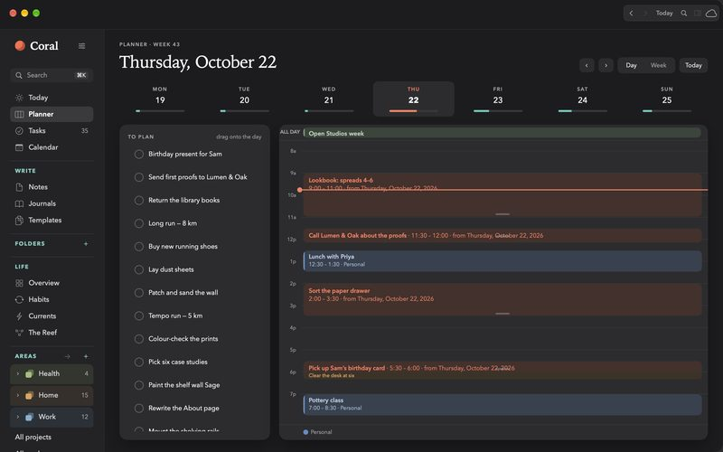
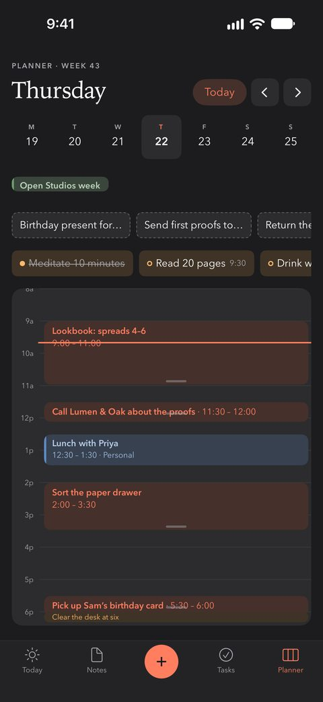
Of habits
Daily, weekly or a few times a week, with streaks and history, or counted in amounts. On iPhone, a habit can count steps or other Apple Health readings toward its goal.

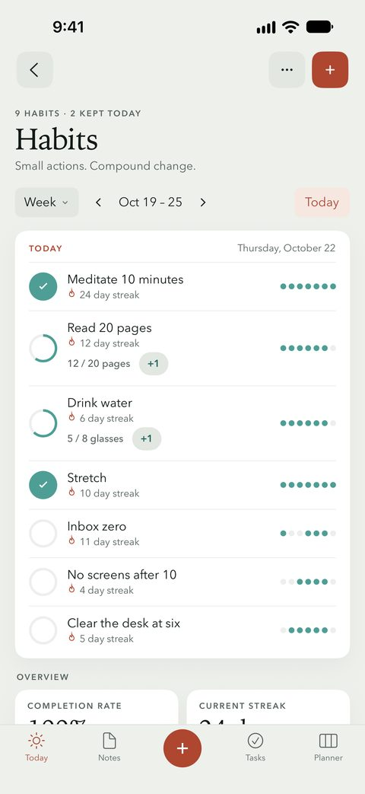
Of views and boards
Coves are saved views over everything in Coral, each a table, cards or a list. The Overview is a board of cards you arrange yourself.
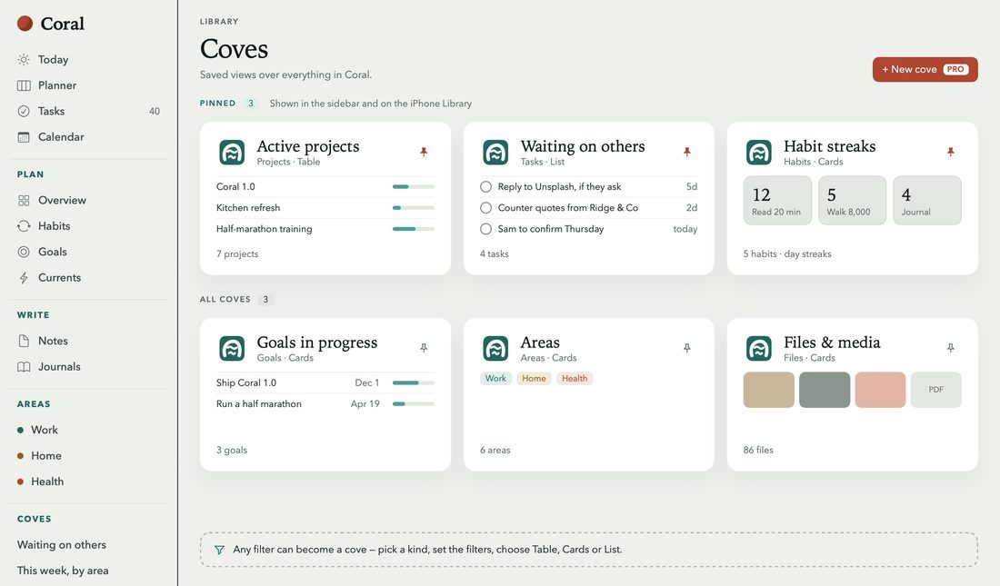
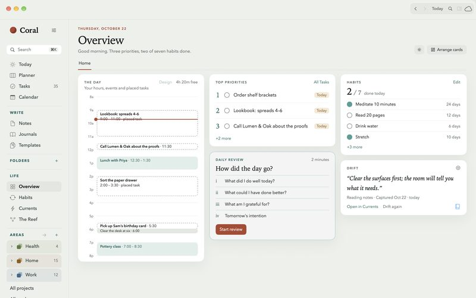
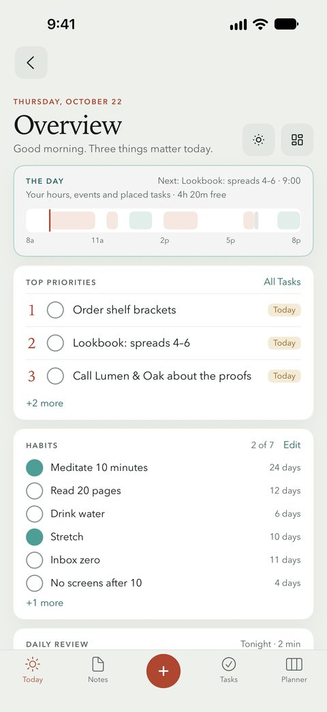
Of capture
On the Mac, press Control-Option-Space from any app. Save pages from Safari, share into Coral from other apps, and keep tasks and habits on your Home Screen.
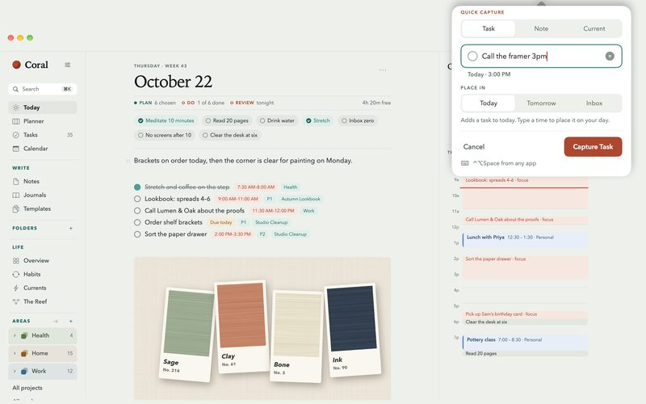
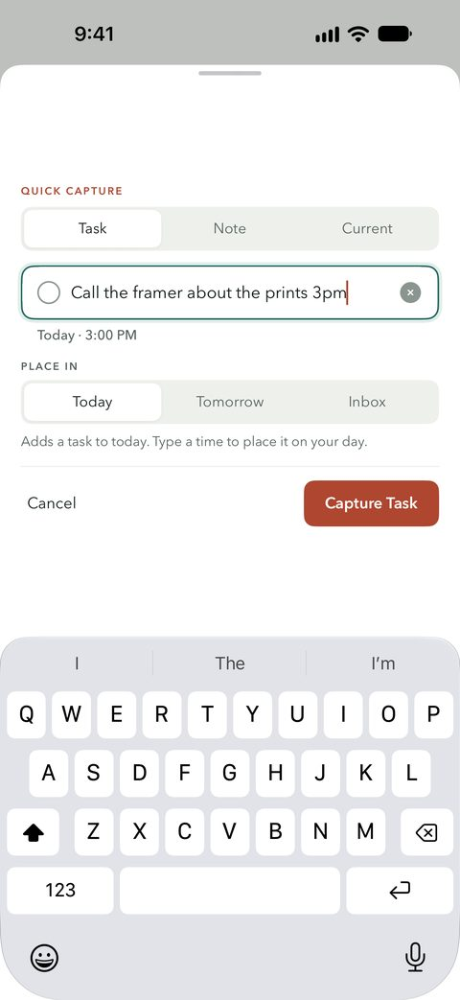
Of the reef
With Coral Pro, the Reef maps how it fits: the areas of a life, the goals in each, and the projects, habits and tasks that serve them.
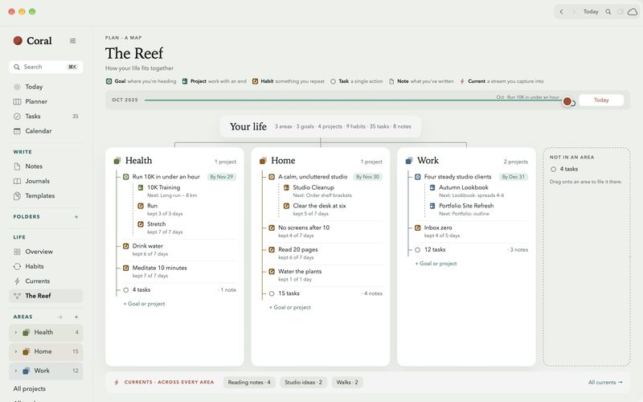
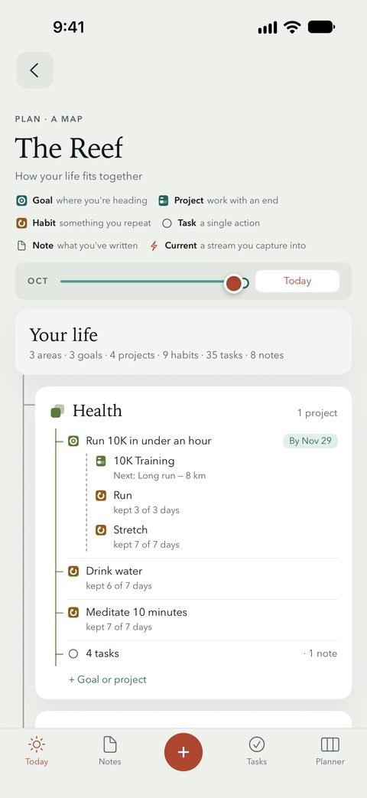
In colour
Light or dark, a built-in theme or one of your own, a backdrop behind a note. Coral takes on the colour you give it.
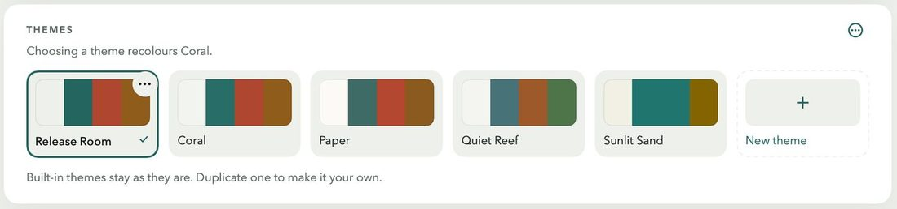
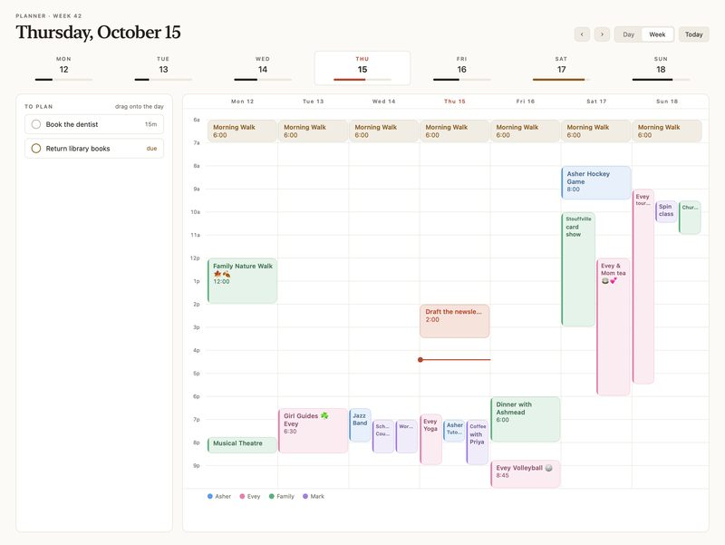
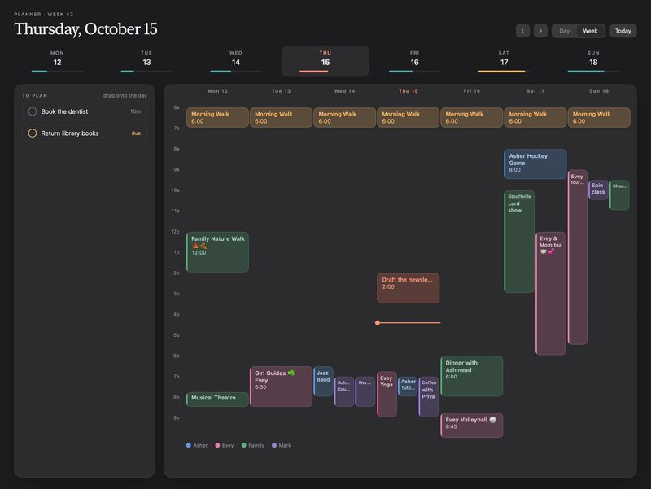
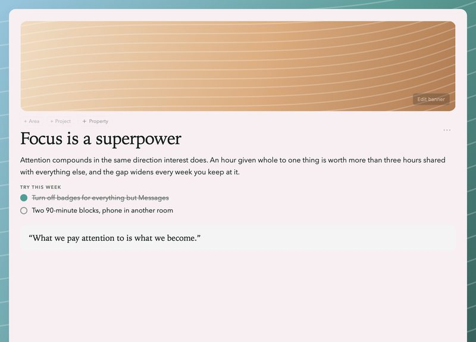
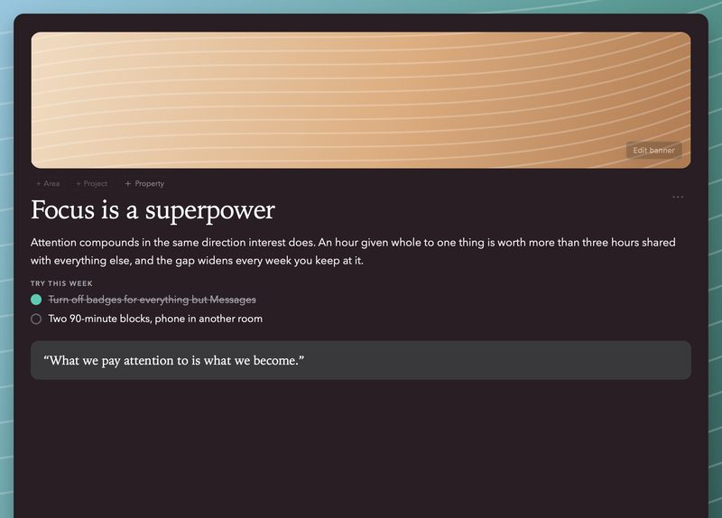
Themes and backgrounds are part of Coral Pro; light and dark are for everyone.
Kept to yourself
Your library lives on your devices, protected by the device’s own encryption. There is no account to make, no analytics, nothing tracked, and no Coral server for anything to be sent to.
With Coral Pro, Mac and iPhone sync through your own private iCloud, and what you write travels end-to-end encrypted.
- End-to-end encrypted
- Note titles and text, with every task in them; saved views (coves); note properties; the amounts you log for a habit; an area’s weekly intention. The keys are kept in your iCloud Keychain, which only your own devices can unlock.
- Sealed before upload
- Pictures and files you add to notes, with AES-256-GCM. Their keys and file names travel inside the end-to-end encryption.
- iCloud’s standard encryption
- The names of projects, areas, folders, habits, goals and Currents, whether you kept a habit on a given day, and a note’s own details, such as its folder and dates. The privacy policy lists them all.
- On your devices
- The library, protected by the device’s own encryption.
- Nowhere else
- There is no Coral server, no account, no analytics and no tracking.
Of the price
Coral
Free
- Today and the weekly, monthly and yearly pages, notes, tasks, projects, areas and habits, on each device
- The Overview, your calendar and Reminders
- Widgets, Quick Capture, Safari and the share sheet
- Built-in coves, and encrypted backups
Coral Pro
$6.99 a month, or $49.99 a year
- Sync between Mac and iPhone, your notes end-to-end encrypted
- The Planner and timeboxing
- Goals and the Reef
- Your own custom coves
- Themes and backgrounds
New subscribers try Coral Pro free for 14 days. Prices in US dollars; they vary by country.
About this page
Set in New York and SF Pro, the two faces Coral uses for its own pages. The pictures are taken from Coral 1.0, filled with an invented October; the privacy drawing is drawn by hand.
Coral is made with ❤️ by Mark Salam. Questions and ideas go to support@getcoralapp.com, where the person who built it reads them.